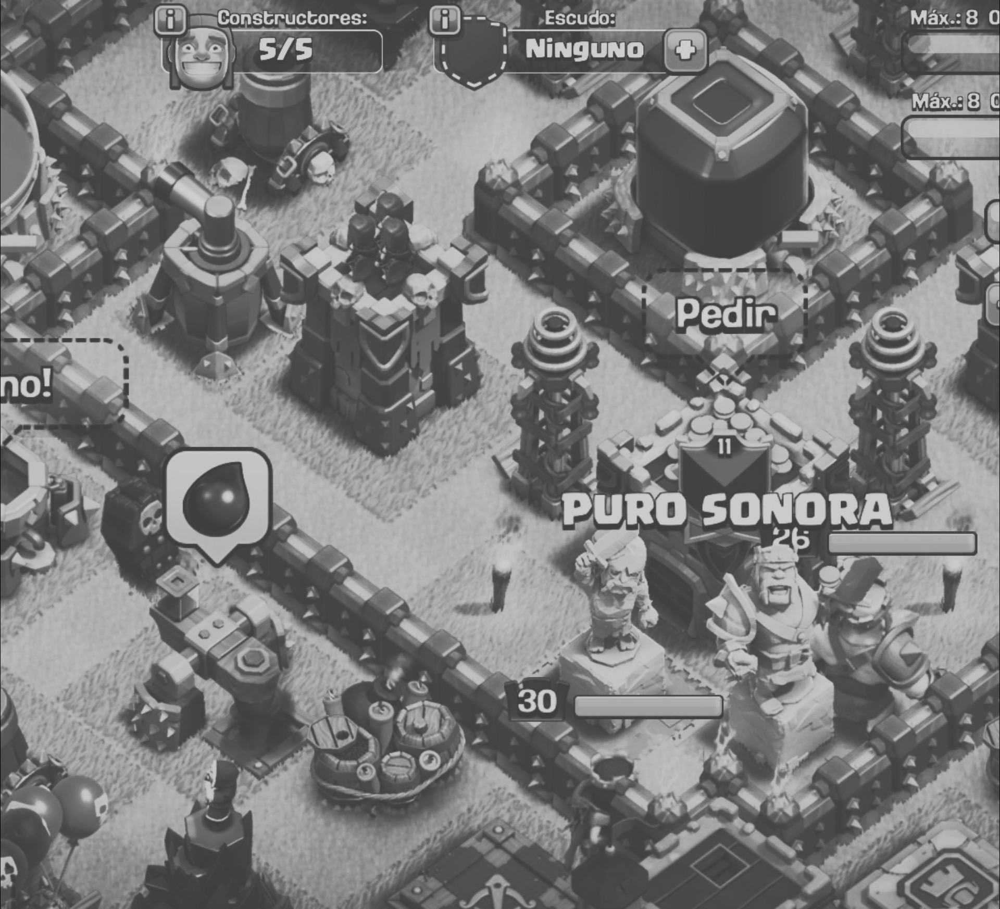

Clan Puro Sonora CoC
Reglas del clan en guerra
- Se debe donar, SIN excepción, a tu aldea asignada. El orden es: 1 a 2 y 2 a 1; 3 a 4 y 4 a 3; 5 a 6 y 6 a 5; 7 a 8 y 8 a 7 ... 49 a 50 y 50 a 49.
- Se deben hacer los dos ataques, maximizando la cantidad de estrellas para el clan. Dos estrellas no sirven para un ayunta 8 o 9. Si no puedes garantizar tres estrellas a tu espejo, baja hasta que puedas conseguir las 3.
- Los ayuntamientos 8 y 9 deben atacar dentro de las primeras 12 horas de guerra.
- Previo a cada guerra se asignara los ayunta 10 y 11 que se enfocaran en limpiar los ayunta 10 y 9 que falten de sacar 3 estrellas.
- Somos un clan de guerra. No se permite pasar más de 3 guerras sin haber participado en una.
Donaciones
- Las donaciones deben de ser niveladas. El +/- debe de estar 500.
- Excepción es cuando un integrante tenga + de 2500 donaciones. En ese caso, no importa su diferencial.
Pertenencia y Comportamiento
- Todos los integrantes deben ser originarios y/o actualmente vivir en el estado de Sonora, no hay excepciones.
- Discusiones políticas y religiosas no pertenecen el chat del clan. Chinguen su madre los naranjeros.
- No hay lugar de insultos personales. Se vale alegar y argumentar puntos efusivamente, pero no se vale agredir personalmente a tus compañeros del clan.
Expulsiones
- Cualquier falla a no cumplir esta guía, será justificada su expulsión del clan.
- Alguien que ha sido expulsado podrá reingresar al clan, siempre y cuando, tenga la autorización del lider.